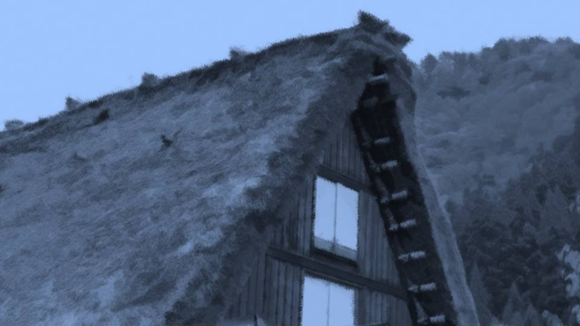
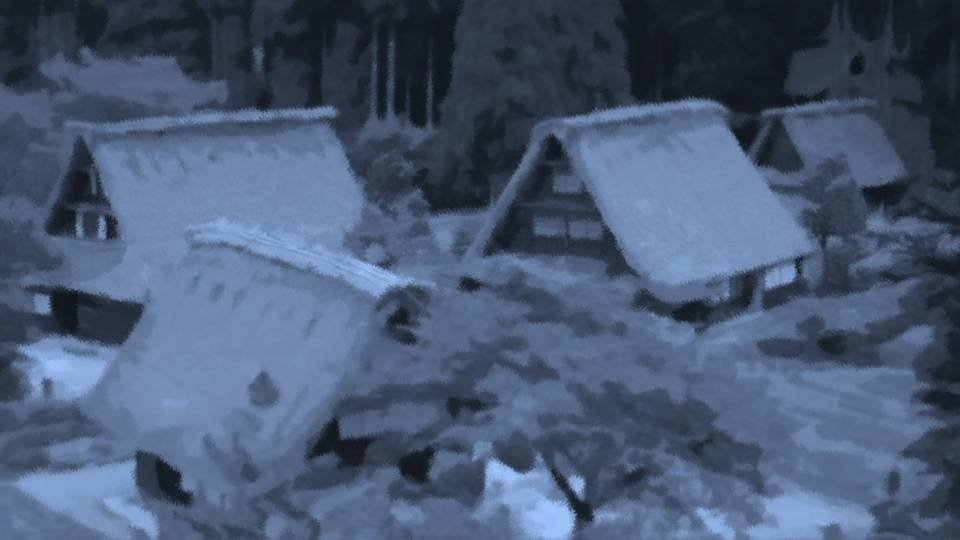
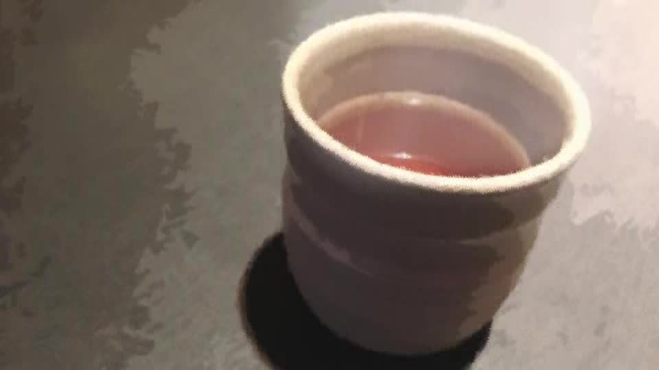

黙示録のラッパ吹き～伝承～

先ほどチガ姉と出会った場所。
住人たちとの騒動が嘘であったかのように静まり返っている。
つまり、誰もいないことを意味している。
住人たちとの騒動が嘘であったかのように静まり返っている。
つまり、誰もいないことを意味している。
周囲の地面を丹念に調べてみる。
たくさんの新しい足跡が残っているが、血痕らしきものはない。
争いがなかったのか、血も出ないほどすぐに決着がついたのか、定かではない。
たくさんの新しい足跡が残っているが、血痕らしきものはない。
争いがなかったのか、血も出ないほどすぐに決着がついたのか、定かではない。
だがもし和解したなら、私たちを呼び戻すとかしてもいいはずだ。
それがないということは――。
チガ姉はまたしても行方不明になった、あるいはやっぱり死体だったか。
どちらにしても、このままではチガ姉の現状を推測することは難しい。
それがないということは――。
チガ姉はまたしても行方不明になった、あるいはやっぱり死体だったか。
どちらにしても、このままではチガ姉の現状を推測することは難しい。
しかし死体でない場合、チガ姉の意思で隠れているのではなく、またしても連れ去られたと考えていいだろう。
1度、集落に戻ってみようか。
あまりにも危険ではあるけど、集落の様子くらい知っておきたい。
集落の様子を見れば、先ほどここで何が起きたのか分かるはずだ。
1度、集落に戻ってみようか。
あまりにも危険ではあるけど、集落の様子くらい知っておきたい。
集落の様子を見れば、先ほどここで何が起きたのか分かるはずだ。

――この時ほど小柄でよかったと思うことはなかった。
身を隠しながら集落に戻るのは、さほど苦労はなかった。
家々には灯がともり、人の気配がある。
ということは今、住人たちは個別に行動していることになる。
身を隠しながら集落に戻るのは、さほど苦労はなかった。
家々には灯がともり、人の気配がある。
ということは今、住人たちは個別に行動していることになる。
――！！
足音が聞こえる。
足音が聞こえる。

さっと近くの生け垣に身を隠す。
どうやら、2人ほどこちらに向かって歩いてきているようだ。
話し声が聞こえる。大人の男の声だ。
どうやら、2人ほどこちらに向かって歩いてきているようだ。
話し声が聞こえる。大人の男の声だ。
「茅萱ちゃん、やっぱり死んだんだろうな」
「結局、今年も呪殺は起きたのか……」
「逆に考えれば、俺たちはあと1年は生きられるってことだ」
「でも、今年、何か変じゃないか？ おかしな音が鳴ったしさ」
「ヘリが近くを通ったんじゃないか？」
「ヘリがあんな音出すか？」
「結局、今年も呪殺は起きたのか……」
「逆に考えれば、俺たちはあと1年は生きられるってことだ」
「でも、今年、何か変じゃないか？ おかしな音が鳴ったしさ」
「ヘリが近くを通ったんじゃないか？」
「ヘリがあんな音出すか？」
「まあ、大魔女様も幸太郎君も大変だよな。こんな呪いみたいなことを解決しようだなんて」
「しかも今年は新村家の娘だもんな。 もう、この集落も解散した方がいいんじゃないかな……」
「いや、俺は最後まで戦いたい。ここから逃げたらご先祖様に顔向けできないだろ」
「そうは言ってもさ……」
「しかも今年は新村家の娘だもんな。 もう、この集落も解散した方がいいんじゃないかな……」
「いや、俺は最後まで戦いたい。ここから逃げたらご先祖様に顔向けできないだろ」
「そうは言ってもさ……」
「お前にもそうしろって言ってるんじゃない。この時代、どうするかはそれぞれの意思次第だ」
「俺だってここを手放すのは嫌だけどさ……」
「まあ、今日は早いところ寝よう。明日十三回忌やるんだろ？」
「どうだろうな、茅萱ちゃんは相変わらず行方不明だし、捜索を優先するんじゃないか？」
「どちらにしても、明日は早起きだな」
「俺だってここを手放すのは嫌だけどさ……」
「まあ、今日は早いところ寝よう。明日十三回忌やるんだろ？」
「どうだろうな、茅萱ちゃんは相変わらず行方不明だし、捜索を優先するんじゃないか？」
「どちらにしても、明日は早起きだな」
――聞こえたのはここまでだった。
2人は私に気づく様子もなく、遠ざかっていった。
2人は私に気づく様子もなく、遠ざかっていった。
今の会話、何なのだろう、明らかにおかしい。
チガ姉のことを、まるで何も知らないかのように話していた。
あの2人だけさっきの集団に加わらなかったのだろうか。
でも、あれだけの人数が集まったのに、たまたま今通りかかった2人が加わらなかっただなんて……。
チガ姉のことを、まるで何も知らないかのように話していた。
あの2人だけさっきの集団に加わらなかったのだろうか。
でも、あれだけの人数が集まったのに、たまたま今通りかかった2人が加わらなかっただなんて……。
他の家に近づき、中の音を聞いてみる。

「いててて……やっぱり筋肉痛だ……」
「もう、いい歳して無理しすぎだって……ほら、湿布」
「だって、茅萱ちゃん心配じゃないか。この時期に消えるなんて……」
「あの子ならきっと大丈夫よ、あんたと違って、運動神経抜群だから」
「そうだな……きっと大丈夫だよな」
「もう、いい歳して無理しすぎだって……ほら、湿布」
「だって、茅萱ちゃん心配じゃないか。この時期に消えるなんて……」
「あの子ならきっと大丈夫よ、あんたと違って、運動神経抜群だから」
「そうだな……きっと大丈夫だよな」
次の家――。
「新村家の火事、結局何だったんだろうな……」
「重要な本があったらしいけど、それを燃やそうとしたみたいだ」
「茅萱ちゃん行方不明と言い、不審火と言い、今年は色々あるなあ」
「重要な本があったらしいけど、それを燃やそうとしたみたいだ」
「茅萱ちゃん行方不明と言い、不審火と言い、今年は色々あるなあ」

絶対におかしい！ チガ姉が現れたことを誰も知らない！
私が盗み聞きした会話の主たちは、偶然さっきの集団にいなかったのであれば成り立つかもしれない。
いや、集団にいなかったにしても、死月妖花のことは知っているだろう。
私が盗み聞きした会話の主たちは、偶然さっきの集団にいなかったのであれば成り立つかもしれない。
いや、集団にいなかったにしても、死月妖花のことは知っているだろう。
じゃあ、さっきの集団は誰だったのだろうか。
チガ姉のことを知っていて、廃屋に行くことがまずいと思っている。
以上の条件に当てはまる仮説は――。
チガ姉のことを知っていて、廃屋に行くことがまずいと思っている。
以上の条件に当てはまる仮説は――。
と、その時、私の肩を叩く者。
一体誰に見つかってしまったのだろうか。
新村家の関係者ならセーフだが、そうでないなら――。
一体誰に見つかってしまったのだろうか。
新村家の関係者ならセーフだが、そうでないなら――。

「えっと君、もしかして元木町から来たっていう……」
そこには、体格のいい中年男性が立っていた。
そこには、体格のいい中年男性が立っていた。
「あ、あ、えっと……」
「ああごめん、驚かせちゃったかな……俺は城崎って言うんだ。 こんな大変な時に来てもらって申し訳ないね」
「………… 五島……絵梨奈です……」
「こんなところでどうしたの？ 新村家まで送ろうか？ 茅萱ちゃんもどこに行ったか分からないし、あまり1人で出歩いちゃダメだよ？」
「ああごめん、驚かせちゃったかな……俺は城崎って言うんだ。 こんな大変な時に来てもらって申し訳ないね」
「………… 五島……絵梨奈です……」
「こんなところでどうしたの？ 新村家まで送ろうか？ 茅萱ちゃんもどこに行ったか分からないし、あまり1人で出歩いちゃダメだよ？」
城崎さんは私の返事を聞く前に、新村家の方へ足を向ける。
が、私はこの人を信用していいのか分からない。
いや、仮に信用できないとしても、抵抗すると余計危険かもしれない。
私は黙って、若干の間合いを空けて城崎さんに続く。
が、私はこの人を信用していいのか分からない。
いや、仮に信用できないとしても、抵抗すると余計危険かもしれない。
私は黙って、若干の間合いを空けて城崎さんに続く。

「念のため、注意しながら歩いてね。俺もこんな状況じゃ1人で出歩くのは怖いし」
おかしい……おかしいよ！
さっきのあの人たちは誰だったの？
荒田集落の住人ではないのは間違いないだろう。
おかしい……おかしいよ！
さっきのあの人たちは誰だったの？
荒田集落の住人ではないのは間違いないだろう。
しかし夏菜ちゃんですら、集落の住人だと思い込んでいた。
つまり、集落の住人ですら知らない、大勢の人々。
今まで姿を見せなかった大勢の人々。
それに該当する集団なんて……やっぱり、1つしかない。
つまり、集落の住人ですら知らない、大勢の人々。
今まで姿を見せなかった大勢の人々。
それに該当する集団なんて……やっぱり、1つしかない。
逆だった。
チガ姉が生者か死人かで考えていた。
その発想は完全に逆だったのだ。
チガ姉が生者か死人かで考えていた。
その発想は完全に逆だったのだ。
さっきの集団――
彼らこそが……
死体だ。

サクラさんや栄一郎さんのように、死んだはずの人間が徘徊していると考えるのが最も妥当だ。
チガ姉が死体かもしれないと思っていたのだが、それは完全に間違いだった。
チガ姉は1人、死体の集団――死月妖花に抵抗していたのだ。
チガ姉が死体かもしれないと思っていたのだが、それは完全に間違いだった。
チガ姉は1人、死体の集団――死月妖花に抵抗していたのだ。
いずれにしても、古郡先輩たちが安全である可能性は少し上がった。
今はチガ姉の指示通り、廃屋へ行くのがいいだろう。
今はチガ姉の指示通り、廃屋へ行くのがいいだろう。
だったら死体たちは、チガ姉に何をしたのだろうか。
またさらって行ったのだろうか。
そうだとしたら、なぜ死体たち――死月妖花はチガ姉にこだわるのだろうか。
またさらって行ったのだろうか。
そうだとしたら、なぜ死体たち――死月妖花はチガ姉にこだわるのだろうか。

チガ姉の予知能力が問題なら、古郡先輩だってすぐにさらわれてもおかしくない。
それに古郡先輩にも、徐々に情報が与えられている。
私が死月妖花なら、前もって古郡先輩も捕縛しておきたいところだ。
でも、古郡先輩は少なくとも先ほどターゲットにはならなかった。
それに古郡先輩にも、徐々に情報が与えられている。
私が死月妖花なら、前もって古郡先輩も捕縛しておきたいところだ。
でも、古郡先輩は少なくとも先ほどターゲットにはならなかった。

古郡先輩とチガ姉の違い……何だろう。
古郡先輩は第二世代で、チガ姉は第三世代―― いやそれなら、夏菜ちゃんだって第三世代だから、捕縛の対象になり得るのだが……。
チガ姉が死月妖花のことを知り過ぎたから……？
それはそれで納得できる理由にはなるのだけど……。
古郡先輩は第二世代で、チガ姉は第三世代―― いやそれなら、夏菜ちゃんだって第三世代だから、捕縛の対象になり得るのだが……。
チガ姉が死月妖花のことを知り過ぎたから……？
それはそれで納得できる理由にはなるのだけど……。
それなら、なぜチガ姉は2度も捕まったのだろうか。
あり得るのは、チガ姉は1度捕まったが死月妖花と何らかの交渉をし、手を組んだ。
しかしそれは、チガ姉が感覚を読まれないようにするためであって、チガ姉の狙いは別のところにあった。
つまり、死月妖花と手を組んでいるように見せかけているのだ。
あり得るのは、チガ姉は1度捕まったが死月妖花と何らかの交渉をし、手を組んだ。
しかしそれは、チガ姉が感覚を読まれないようにするためであって、チガ姉の狙いは別のところにあった。
つまり、死月妖花と手を組んでいるように見せかけているのだ。
では、さっきの騒動がチガ姉と死体の狂言だとしたら、死体の目的は何だろうか。
私たちを廃屋に行かせることが目的？
だけどそれなら「集落に戻れ」ではなく「廃屋に行け」と言えばよかった。
私たちを廃屋に行かせることが目的？
だけどそれなら「集落に戻れ」ではなく「廃屋に行け」と言えばよかった。
チガ姉の進言に信憑性を持たせるために、わざと死体は反対のことを言ったのだろうか。
もしあの時、能面の人たちが「廃屋に行け」と言い、同じくチガ姉も「廃屋へ行け」と言ったら、私たちはチガ姉に対して不信を持つだろう。
もしあの時、能面の人たちが「廃屋に行け」と言い、同じくチガ姉も「廃屋へ行け」と言ったら、私たちはチガ姉に対して不信を持つだろう。
これ以上は、もう推測できる要素がない。
今はあらゆる方面での解釈が可能なのだ。
何か絞り込む情報が必要だ。
今はあらゆる方面での解釈が可能なのだ。
何か絞り込む情報が必要だ。
――結局、城崎さんの話も上の空で聞き流したまま、新村家に到着した。


「大魔女様、この子」
焼けた蔵の前には、おばあさんが残っていた。
もう蔵の調査は終わったらしく、おばあさんは焼けた蔵を眺めていた。
この人は味方なのだろうか。
と、おばあさんは大きくため息をつき、こちらを向く。
焼けた蔵の前には、おばあさんが残っていた。
もう蔵の調査は終わったらしく、おばあさんは焼けた蔵を眺めていた。
この人は味方なのだろうか。
と、おばあさんは大きくため息をつき、こちらを向く。

「ああ、城崎、ありがとうね。
えっと、お嬢ちゃん1人かい？」
「…………」
「…………」
「えっと……じゃあ、俺は帰るから」
私たちの微妙な空気を察したのか、城崎さんはさっと立ち去った。
城崎さんは何1つおかしな仕草を見せず、私を送り届けてくれた。
やっぱり、ここの住人たちは直接事件に関わっていないようだ。
城崎さんは何1つおかしな仕草を見せず、私を送り届けてくれた。
やっぱり、ここの住人たちは直接事件に関わっていないようだ。
そう言えば、私たちは最初の挨拶以外、会話をしていない。
そのぎこちなさも相まって、居心地の悪い空気が流れる。
それだけではない。私は今、荒田の人を安易に信用できない。
それがこのぎこちなさを生んでいる。
そのぎこちなさも相まって、居心地の悪い空気が流れる。
それだけではない。私は今、荒田の人を安易に信用できない。
それがこのぎこちなさを生んでいる。
「えっと、絵梨奈ちゃん、だったかな？」
「はい……」
家族以外から下の名前で呼ばれたのは何年振りだろうか。
「はい……」
家族以外から下の名前で呼ばれたのは何年振りだろうか。
「ごめんね、せっかく来てもらったのに、こんなことになっちゃって……」
「いえ、大体のことはうかがってましたから」
「…………」
「…………」
また、居心地の悪い空気。
焼け焦げた蔵の臭いが、妙に鼻につく。
「いえ、大体のことはうかがってましたから」
「…………」
「…………」
また、居心地の悪い空気。
焼け焦げた蔵の臭いが、妙に鼻につく。
「家、入ろうかね」
「はい……」
何かを察したのだろうか、私に気を遣うかのように中に招き入れられた。
「はい……」
何かを察したのだろうか、私に気を遣うかのように中に招き入れられた。
今は少なくとも、住人たちは私たちに敵対していない。
私は大人しく、おばあさんに従うことにした。
私は大人しく、おばあさんに従うことにした。
「どうぞ」

video: お茶.wmvおばあさんは、温かいお茶を差し出してくれた。
video: お茶.wmv
「あの、幸太郎さんは……？」
「詫びのあいさつ回りさ。茅萱の件と、さっきの火事でみんなに迷惑かけたからね」
「…………」
さっき家々を回った時、幸太郎さんに出会わなかったが、まだ歩き回っているのだろうか。
「詫びのあいさつ回りさ。茅萱の件と、さっきの火事でみんなに迷惑かけたからね」
「…………」
さっき家々を回った時、幸太郎さんに出会わなかったが、まだ歩き回っているのだろうか。
video: お茶.wmv
考えてみれば、住人たちは蔵の消火を手伝っていたのだから、あのように武装する余裕はなかったはず。
やっぱり、あの森で会った集団は死体に違いない。
やっぱり、あの森で会った集団は死体に違いない。
video: お茶.wmv
「絵梨奈ちゃん、聞きたいことがあるんだろ？」
「はい……」
この人は、相手の意図を察するのが得意のようだ。
私のように論理的に考えるのではなく、相手の表情や間を見て、そう察している。
この人は、どこまで知っているのだろうか。
「はい……」
この人は、相手の意図を察するのが得意のようだ。
私のように論理的に考えるのではなく、相手の表情や間を見て、そう察している。
この人は、どこまで知っているのだろうか。

「おばあさんは……
死体が動く話は知っていますか？」
「死体が動く……？」
おばあさんは少し目を落とし、首をかすかに捻る。
「死体が動くなんて、聞いたことないね」
「じゃあ、それに似た現象は思い当たりませんか？」
すると、さらに目を落とし、首を捻る。
「死体が動く……？」
おばあさんは少し目を落とし、首をかすかに捻る。
「死体が動くなんて、聞いたことないね」
「じゃあ、それに似た現象は思い当たりませんか？」
すると、さらに目を落とし、首を捻る。

「んん……その様子だと、どうやらおかしなことが起きているようだね。
例えば、死体が動いているとか」
例えばというか、私の話そのままなんだけど……。
でもそれは、おばあさんもその話を受け入れる心構えができているという合図だ。
例えばというか、私の話そのままなんだけど……。
でもそれは、おばあさんもその話を受け入れる心構えができているという合図だ。
「じゃあ、死月妖花って菌類はご存知ですか？」
「死月妖花……？ うーん……ごめん、聞いたことないね。それは茅萱が調べていたことかい？」
「死月妖花……？ うーん……ごめん、聞いたことないね。それは茅萱が調べていたことかい？」
「はい、チガ姉は、蔵で本を読んでいました。
死月妖花というこの地に巣食う怪物、そして死者を意のままに操り、最後は人間を桜の木に変えてしまい、死月妖花の身体の一部にしてしまいます。
チガ姉は、その死体に連れていかれたのだと思います」
と、おばあさんは落としていた目を私に向け、捻っていた首を正す。
と、おばあさんは落としていた目を私に向け、捻っていた首を正す。
「絵梨奈ちゃん、その死体がいる場所は見当ついているのかい？」
「墓地広場に向かう森の道中で、チガ姉と死体たちを目撃しました。 私たちはいったんその場を離れましたが、私だけすぐに引き返して…… でも、その後どうなったかは推測の域を出ません」
「なるほどね、そういうことか……」
何か心当たりがあるようだ。
「墓地広場に向かう森の道中で、チガ姉と死体たちを目撃しました。 私たちはいったんその場を離れましたが、私だけすぐに引き返して…… でも、その後どうなったかは推測の域を出ません」
「なるほどね、そういうことか……」
何か心当たりがあるようだ。
「これは……
歴代の大魔女しか知らされないことだ。
でも、それが呪殺事件の解決に使えるとは思っていなかった。
もしこれが役に立つなら、今絵梨奈ちゃんに知らせても構わない」
「お願いします」
「お願いします」
歴代大魔女しか知らされていなかったこと――
それが役に立つのか分からないが、少しでも手がかりが欲しい。
チガ姉を見つける手掛かりだけでなく、この事態すべてを解決する手がかりが。
チガ姉を見つける手掛かりだけでなく、この事態すべてを解決する手がかりが。
「死者黄泉出で尋常ならざる妖花立ち並ぶ。
死体となりし人々もまた妖花となり黄泉出でる」
妖花が立ち並び、死者が出てくる。
これは今起きていることと同じ……？
妖花が立ち並び、死者が出てくる。
これは今起きていることと同じ……？
「あの！ それって……！」
「うん、まさに今起きていることだ」
「じゃあチガ姉はどこに……！」
「うん、まさに今起きていることだ」
「じゃあチガ姉はどこに……！」
「『尋常ならざる妖花』がその死月妖花なら……。
茅萱は地下の洞窟にいるかもしれない」
「地下の洞窟……？ もしかして、新村先輩たちが捜索に向かったっていう……！」
「その洞窟はね、作られたんだよ。 『尋常ならざる妖花』にね」
「死月妖花が洞窟を作った……？」
「地下の洞窟……？ もしかして、新村先輩たちが捜索に向かったっていう……！」
「その洞窟はね、作られたんだよ。 『尋常ならざる妖花』にね」
「死月妖花が洞窟を作った……？」

死月妖花とは巨大な菌類。
その菌床がこの一帯に広がっているなら、死月妖花の巨大な菌糸があった場所に空洞ができても不思議ではない。
つまり、洞窟は死月妖花の中心部に繋がっていることになる。
もし死体たちがチガ姉をさらい監禁するとすれば、死月妖花が手を伸ばしやすいその洞窟が適している。
その菌床がこの一帯に広がっているなら、死月妖花の巨大な菌糸があった場所に空洞ができても不思議ではない。
つまり、洞窟は死月妖花の中心部に繋がっていることになる。
もし死体たちがチガ姉をさらい監禁するとすれば、死月妖花が手を伸ばしやすいその洞窟が適している。
「その洞窟って、どこまで続いているんですか？」
「実は私も1番奥まで行ったことはなくてね。 落盤が起こりやすくて危ないから、そこまで行くことは私の代以前から禁止されている」
「実は私も1番奥まで行ったことはなくてね。 落盤が起こりやすくて危ないから、そこまで行くことは私の代以前から禁止されている」
「そうですか……。
でも、おばあさんは死月妖花のことをまったく知らないわけじゃないんですよね？」
「残念だけど、死月妖花や死体が動くとかは、今の伝承以外では聞いたことがない。 もし茅萱の読んでいた本にそのことが書いてあるなら、幸太郎もそのことを知っているはずだ。 幸太郎は、茅萱の発狂を治すために、あそこの本を読みあさっていたからね」
「残念だけど、死月妖花や死体が動くとかは、今の伝承以外では聞いたことがない。 もし茅萱の読んでいた本にそのことが書いてあるなら、幸太郎もそのことを知っているはずだ。 幸太郎は、茅萱の発狂を治すために、あそこの本を読みあさっていたからね」
「おばあさんは蔵書を読んだことはないんですか？」
「あそこにあるのは外国語だったり古い字だったりで、さすがに難しいからね。 恥ずかしながら、冠婚葬祭のしきたりとか、その辺くらいしか読んでないよ」
「あそこにあるのは外国語だったり古い字だったりで、さすがに難しいからね。 恥ずかしながら、冠婚葬祭のしきたりとか、その辺くらいしか読んでないよ」
「他に伝承はないんですか？ 死月妖花に繋がりそうな伝承は……」
「まだあるよ。 『死神は、アバドンに従いし4人の神使。 アバドンは硫黄の火山から現れる。 大魔女がすべきこと―― それはアバドンと4人の神使を封印し続けること』」
「アバドン……？ 神使……？」
「まだあるよ。 『死神は、アバドンに従いし4人の神使。 アバドンは硫黄の火山から現れる。 大魔女がすべきこと―― それはアバドンと4人の神使を封印し続けること』」
「アバドン……？ 神使……？」
「これは口頭伝承だから、蔵書にはないそうだよ。
歴代の大魔女が掛け算九九のように覚えさせられるのさ」
死神、アバドン、4人の神使、硫黄――。
初めて出てくる言葉…… いや、どこかで同じ言葉を見かけた！
荒田集落に来てから、どこかで……！
死神、アバドン、4人の神使、硫黄――。
初めて出てくる言葉…… いや、どこかで同じ言葉を見かけた！
荒田集落に来てから、どこかで……！
video: 悪天候.wmvあの『セレジェイラの教え』という教典だ！
要所要所を思い出してみると――。
要所要所を思い出してみると――。
video: 悪天候.wmv母国の美しい木々と花々。
これらは日本で言う桜に似ていたが、薔薇や 李 にもにも似ている。
我々はボニータと呼んでいた。
ボニータとは母国語で『美しい』という意味だ。
これらは日本で言う桜に似ていたが、薔薇や 李 にもにも似ている。
我々はボニータと呼んでいた。
ボニータとは母国語で『美しい』という意味だ。
video: 悪天候.wmvそれがある日、ボニータは大きな地震とともに禍々しい姿へと変わり果てた。
巨大な樹は街を破壊し、空を覆いつくす。
同時にボニータ以外の木々や花々は一瞬にして朽ち果てた。
それだけではない。死人たちがよみがえり、人々を虐殺し始めたのだ。
巨大な樹は街を破壊し、空を覆いつくす。
同時にボニータ以外の木々や花々は一瞬にして朽ち果てた。
それだけではない。死人たちがよみがえり、人々を虐殺し始めたのだ。
video: 悪天候.wmv当初は我々も軍を率いて死者の軍勢に対抗していたが、不死身の軍勢にかなうはずもなかった。
さらに硫黄の火山より、神使と呼ばれる4人の死の軍勢の将、さらに彼らの魔王―― アバドンが現れた。
神使たちは狡猾な話術と高い知性を持ち、我々を殺すどころから次々と仲間は死の軍勢に寝返り始めた。
そう、仲間たちは疑心暗鬼に陥り、ついには殺し合うようになった。
さらに硫黄の火山より、神使と呼ばれる4人の死の軍勢の将、さらに彼らの魔王―― アバドンが現れた。
神使たちは狡猾な話術と高い知性を持ち、我々を殺すどころから次々と仲間は死の軍勢に寝返り始めた。
そう、仲間たちは疑心暗鬼に陥り、ついには殺し合うようになった。
video: 悪天候.wmvそうだ、あそこにアバドン、4人の神使、硫黄という言葉があった。
やっぱり、死月妖花そっくりの菌類がここ以外にも存在していたのだ。
セレジェイラ聖教の祖である新村儀之助は、母国で同様の災害を経験していた。
やっぱり、死月妖花そっくりの菌類がここ以外にも存在していたのだ。
セレジェイラ聖教の祖である新村儀之助は、母国で同様の災害を経験していた。
video: 悪天候.wmvアバドン、4人の神使、硫黄――。
多くの比喩らしき単語が並ぶ中、注目すべきと考えたのは『硫黄』というやけに具体的な物質だ。
そしてこの伝承の存在自体がもう1つの着目ポイントだ。
伝承は何らかの事象を後世に伝えるために作られるもの。
多くの比喩らしき単語が並ぶ中、注目すべきと考えたのは『硫黄』というやけに具体的な物質だ。
そしてこの伝承の存在自体がもう1つの着目ポイントだ。
伝承は何らかの事象を後世に伝えるために作られるもの。
video: 悪天候.wmvここで私は1つ確信した。
過去、荒田集落は死月妖花による災害を経験していたのだ。
新村儀之助の母国だけでなく、この荒田までも昔は死月妖花により滅亡しかけた。
その時代に集落に知れ渡った『セレジェイラの教え』になぞらえて、その災害を伝承として記録したのだろう。
過去、荒田集落は死月妖花による災害を経験していたのだ。
新村儀之助の母国だけでなく、この荒田までも昔は死月妖花により滅亡しかけた。
その時代に集落に知れ渡った『セレジェイラの教え』になぞらえて、その災害を伝承として記録したのだろう。
video: 悪天候.wmvしかし、この集落がずっと存続しているということは、何らかの方法で当時の住人たちは死月妖花を撃退することに成功したはず。
その方法が、
『アバドンと4人の神使を封印し続けること』
だ。
その方法が、
『アバドンと4人の神使を封印し続けること』
だ。
video: 悪天候.wmvさらにここで、研究レポートと併せて考えることで、より科学的、論理的なつながりを推測できる。
しかし気になる。『硫黄』というやけに具体的な物質。
硫黄の火山……。
硫黄と言えば……。
しかし気になる。『硫黄』というやけに具体的な物質。
硫黄の火山……。
硫黄と言えば……。
video: 悪天候.wmv「この辺に火山はありますか？
この800年の間に噴火した火山が」
「どうだろうね……少なくとも私は知らないし、噴火があった記録もない」
ということは、硫黄の火山とは火山そのままの意味ではないのか。
他に、硫黄を含むものが噴き出す場所と言えば――。
「どうだろうね……少なくとも私は知らないし、噴火があった記録もない」
ということは、硫黄の火山とは火山そのままの意味ではないのか。
他に、硫黄を含むものが噴き出す場所と言えば――。
video: 悪天候.wmv「この辺に温泉はありませんか？
人目につきにくいような場所で、ほとんど人が立ち入らないところに」
「確かにあるよ、ここから歩いて2時間ほど山の中に入ったところ―― 糸姫山の頂上だ」
「確かにあるよ、ここから歩いて2時間ほど山の中に入ったところ―― 糸姫山の頂上だ」
video: 悪天候.wmv「おそらく硫黄の火山と言うのは、その温泉のことです。
アバドンとはヘブライ語で奈落の王を意味し、4人の神使はその手下。
この言い伝えがあるということは、過去にも死月妖花による事件が発生していたはずです！」
video: 悪天候.wmv「なるほど……
私が大魔女を引き継いだときは、『昔からの言い伝えだから、覚えておく程度でいい』なんて言われていたけど……。
やっぱり、先人の知恵はバカにできないね。幸太郎の知識と合わせることで真の解決策が見えるかもしれない」
video: 悪天候.wmv「いつ、幸太郎さんは戻りますか？」
「茅萱のことが気にかかるかい？」
「はい、幸太郎さんを待っていたら、チガ姉の救出が遅れてしまいます」
「私が行こう。幸太郎には置手紙をしておく」
「それって、おばあさんが一緒に来てくれるってことですか？」
「茅萱のことが気にかかるかい？」
「はい、幸太郎さんを待っていたら、チガ姉の救出が遅れてしまいます」
「私が行こう。幸太郎には置手紙をしておく」
「それって、おばあさんが一緒に来てくれるってことですか？」
video: 悪天候.wmv「そうだよ、それともやっぱり、私は怪しいかい？」
「い、いえ！ そういうわけじゃなくて……。 なんか、大魔女様自ら動いてくれるってのが意外で……」
「そうかい？ これでも私は、みんなと同じように接してほしいんだけどね。 大魔女なんて仰々しい役職のせいで、外から来た人はみんな最初はびっくりするね、確かに」
「い、いえ！ そういうわけじゃなくて……。 なんか、大魔女様自ら動いてくれるってのが意外で……」
「そうかい？ これでも私は、みんなと同じように接してほしいんだけどね。 大魔女なんて仰々しい役職のせいで、外から来た人はみんな最初はびっくりするね、確かに」
video: 悪天候.wmv
と、おばあさんは立ち上がり、上着を羽織った。
video: 悪天候.wmv
「なつみちゃんだって、私のことをエリカちゃんって呼んでるし、絵梨奈ちゃんだって、そう呼んでいいんだよ？」
「でも……それは馴れ馴れしすぎじゃ……。 そ、そんなことより、早く探しに行きましょう」
さすがにいきなりエリカちゃんって呼ぶのは気が引けた。
「でも……それは馴れ馴れしすぎじゃ……。 そ、そんなことより、早く探しに行きましょう」
さすがにいきなりエリカちゃんって呼ぶのは気が引けた。
video: 悪天候.wmvでも、この大魔女と呼ばれているおばあさんが最前線に立ってくれるのはとても心強い。
いずれにしても、今はこの人に頼るしかない。
いずれにしても、今はこの人に頼るしかない。
Read ✓ Next in this arc →